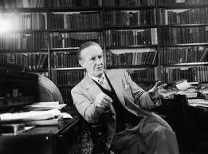

Quintus can be found at qcurtius.com. He is the author of the books On Duties, Thirty Seven, Sallust: The Conspiracy Of Catiline And The War Of Jugurtha, and other books. His work has been reviewed at Taki's Magazine. He can be followed on Twitter


We have often discussed language-related subjects here. Readers interested in language acquisition may find it beneficial to hear something about the language ideas of one of the twentieth century’s most influential fiction authors, J.R.R. Tolkien. Everyone knows him as a founder (perhaps the founder) of modern fantasy writing; few, however, are aware of the depth and breadth of his linguistic knowledge. Tolkien himself once said that he considered his books as little more than vehicles for the expression of his language interests: meaning that for him language was far more important than storytelling.
He did not really develop a “complete” theory of language in the conventional sense. What we know of his ideas comes through in his interviews, lectures, and articles. But there is enough left behind for us to summarize some major points and draw some conclusions. Before we get into these details, we should review a bit of his background.
Tolkien was born in 1892 and showed a facility for language acquisition at an early age. He tried his hand at creating fictional languages several times, learned Esperanto (a popular pursuit at the turn of the century), and learned several real ones. He graduated from Exeter College, Oxford, in 1915 with a degree in English language and literature; he was particularly enamored with Old English, or Anglo-Saxon. The first world war intervened, but he was able to escape the meat grinder unscathed, and was demobilized in 1920.

He immediately returned to his philological and literary pursuits, perhaps grateful that the Reaper had spared him. He soon produced a wonderful and quite influential translation of Beowulf which has remained a vital text in Anglo-Saxon studies. It must be remembered that in Tolkien’s day the poem was still looked upon as a quaint but immature product of a primitive past. Tolkien, using his knowledge of Old English, was able to demonstrate that the work was actually a sophisticated literary work, deserving of serious study. No one had really tried to argue this before, and Tolkien’s contributions to this field soon became legendary.
In his spare time, when he was not lecturing or doing research, he worked on his fictional stories. His active and probing mind could not remain idle for long; he always needed to be working on some linguistic puzzle. Two foreign languages captivated his mind: Welsh and Finnish. Readers who have some knowledge of these languages may discern, here and there, their substratal influence in his “Middle-Earth” books. Tolkien spent considerable time inventing fictional languages as part of his fantasy stories. We should note that these were not just a few sentences tossed together, but logically consistent and grammatically expanded structures.
But with so many real languages to be learned or studied, why would a man like Tolkien devote so much time and effort to inventing fictional ones? To answer this question, we must appreciate the fact that some people enjoy puzzles and cryptograms for their own sake. For this kind of mind, the reward is simply the joy of creating and designing, just as the artist gets joy out of sculpting from a lump of inert clay. I personally would never bother with such an exercise, since time is precious and for me is better spent with real languages.
But I do recognize that such fictional pursuits have real value: there is no better way to know how an engine works than by building your own. On an airplane flight recently I had a chance to see the recent film “Arrival,” directed by Denis Villenueve. In the movie, a linguistics professor, along with some other specialists, is asked to try to decipher the alien speech of some extraterrestrial visitors. As I watched the film, it became apparent to me that someone who had played with synthetic languages would be well-suited to this task. The exercise is also useful for behavioral analysis, code-breaking, psychology, and speech therapy.
Tolkien’s ideas on language “creation” are worth noting:
But what were his thoughts on real languages? Some of these ideas are discussed in a famous lecture he delivered on English and Welsh. It is here that Tolkien departs from the conventional wisdom of our own day, and for this reason alone his ideas are worth reflecting on. Our conventional wisdom today commands that a person should learn a language that affords him “practical” benefits for commerce, travel, trade, or what not. Under this view, perceived practicality trumps all else.
But Tolkien dissented from this view. As he saw it, the first guiding principle of language learning should be passion. In other words, a person should choose a language with absolutely no regard for its “practical” value; he should choose it for its own sake. Since learning a new tongue was a huge amount of effort, the only way a person would be able to sustain himself through the grind would be through the assistance of love.

So for Tolkien, love trumped practicality. It is easy to scoff at this idea, but the more one thinks about it, the more one realizes that he has a point. Learning a new language is a tremendous undertaking; and to embark on it for utilitarian reasons alone means that for most people it will be quickly abandoned once the going becomes tough. The passionate lover, however, is not so easily deterred. He will stick with his stubborn mistress though thick and thin, because he is following the desires of his innermost heart.
The debate between practicality versus personal interest is an unending one, and will not be settled here; but we should at least recognize that Tolkien has something important to add to the debate on language acquisition.
Read More: The Dangers Of Romantic Love